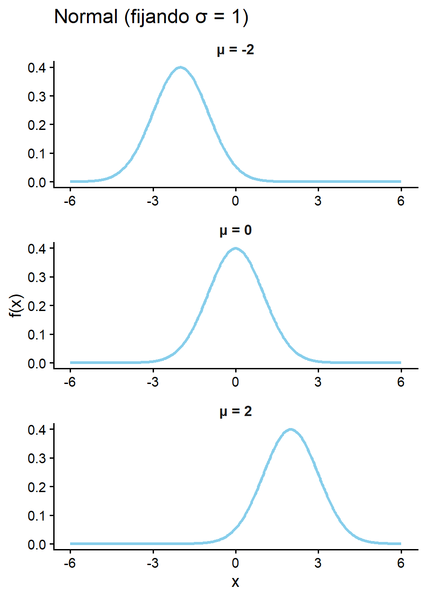
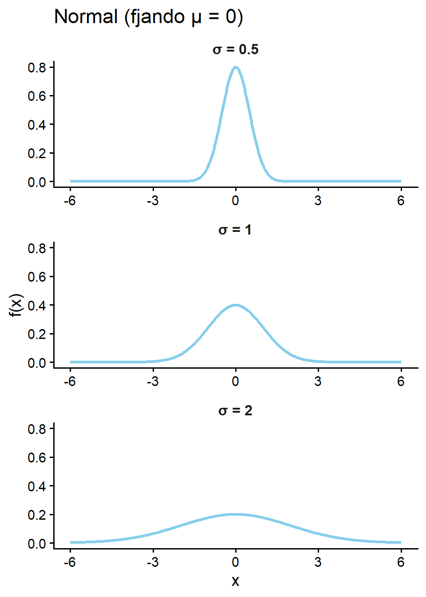
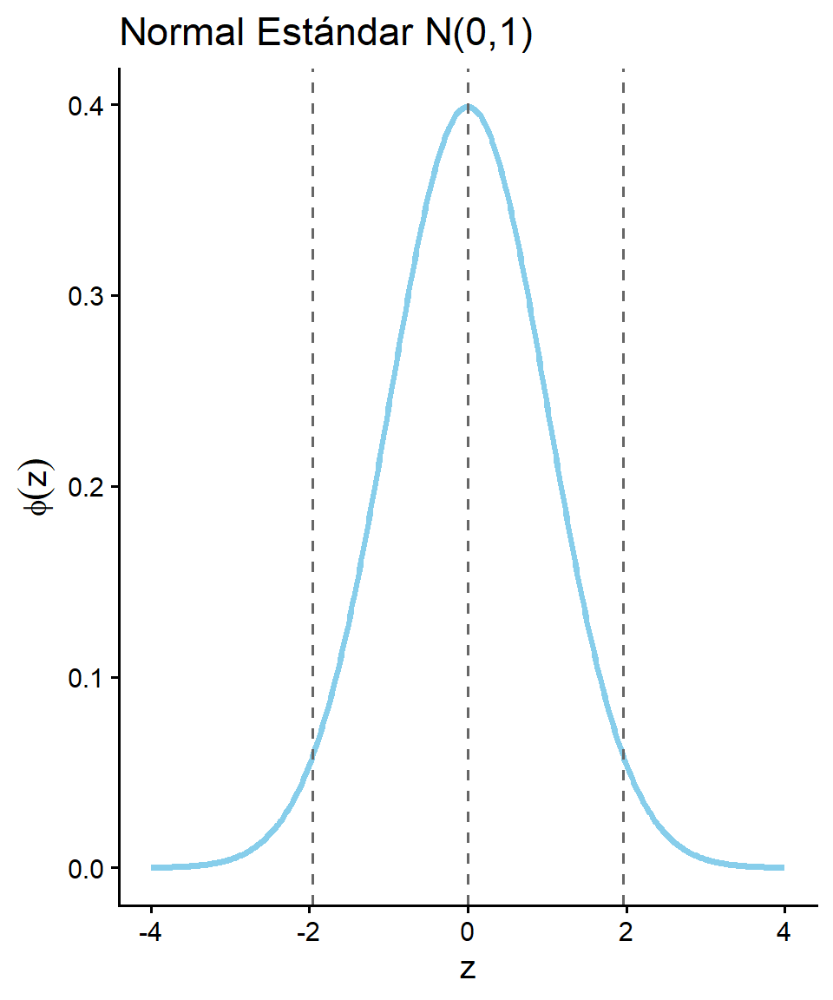
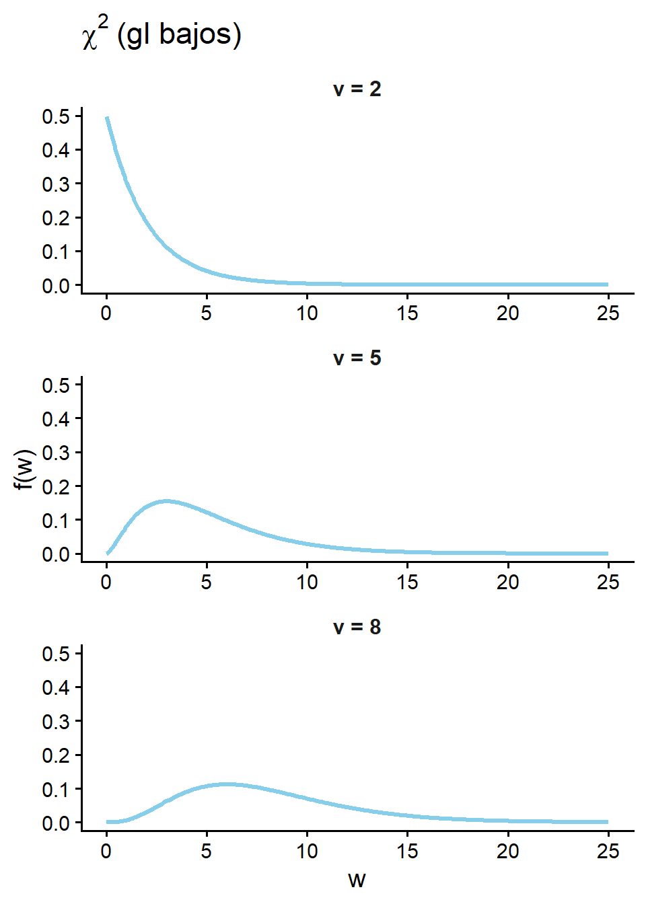
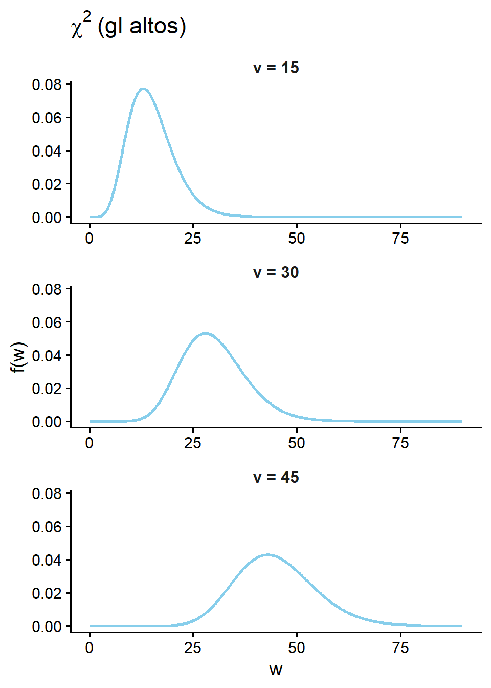
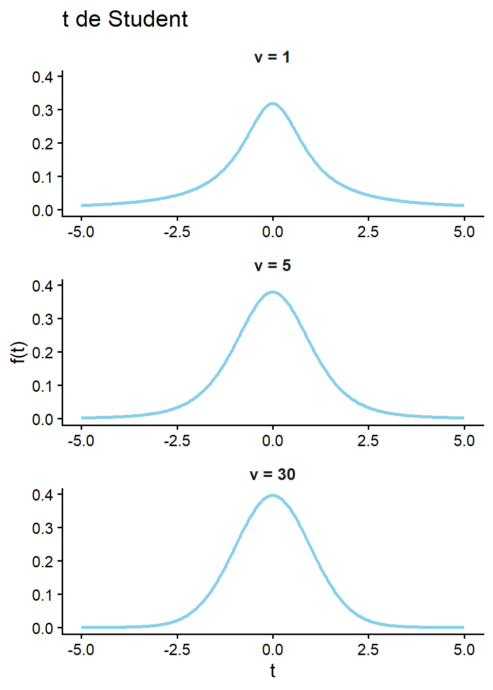
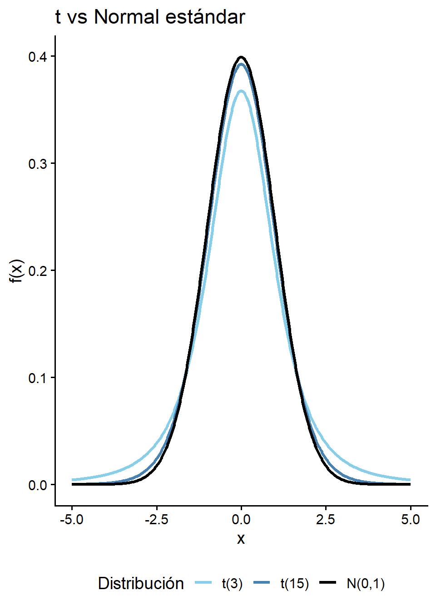

[XS-1130 Principios de Inferencia]
En una variable continua la probabilidad en un punto es cero:
\[P(X = x) = 0\]
Aquí no existe una función que calcule “la probabilidad exacta”.
Por el mismo motivo, menor y menor igual son indiferentes (respectivamente con mayor o mayor igual).
\[ P(X \le x) = P(X<x) \quad y \quad P(X\ge x) = P(X>x) \]
Modela variables continuas cuya densidad es simétrica alrededor de una media \(\mu\), con dispersión controlada por una desviación estándar \(\sigma > 0\).
Surge como límite de muchas sumas de variables independientes (Teorema del Límite Central) y es la distribución de referencia en medición, errores y modelos lineales.
Aplicaciones: estaturas, pesos, puntajes de exámenes, errores de medición, tiempos de reacción, variables financieras y biológicas aproximadamente simétricas.
Ejemplo:
La estatura de mujeres adultas en una población se modela mediante una distribución normal con media \((\mu)\) igual a 160 y desviación \((\sigma)\) igual a 6 (en cm). ¿Cuál es la probabilidad de que una mujer seleccionada al azar mida 170 cm o más?
Las calificaciones de un examen siguen \(X \sim N(72,\ 10^2)\). ¿Cuál es la probabilidad de obtener una nota estrictamente mayor que 85?
Función de densidad:
\[\Large f(x) = \begin{cases} \dfrac{1}{\sigma\sqrt{2\pi}}\, \exp\!\left(-\dfrac{(x-\mu)^2}{2\sigma^2}\right), \quad -\infty < x < \infty \\[1em] 0 \quad \text{en otro caso} \end{cases}\]
Esperanza: \(\quad E[X] = \mu\)
Varianza: \(\quad \operatorname{Var}(X) = \sigma^2\)
Nota: la Normal es simétrica respecto a \(\mu\).


Ejemplo 1: La estatura de mujeres adultas se modela como \(X \sim N(160,36)\) (cm). ¿Cuál es la probabilidad de que una mujer seleccionada al azar mida 170 cm o más?
Solución: Note que \(\mu = 160\), \(\sigma^2 = 36 \Rightarrow \sigma=6\).
\[P(X \ge 170) = \int_{170}^{\infty}\dfrac{1}{6\sqrt{2\pi}}\,\exp\!\left(-\dfrac{(x-160)^2}{2\cdot6^2}\right)dx \quad \approx 0.0478\]
Esta integral no posee una antiderivada y se ocupan de otro tipo de integración (coordenadas polares, relación con la función gamma, expansión de taylor).
Solución R:
Ejemplo2 : Las calificaciones de un examen siguen \(X \sim N(72,\ 10^2)\). ¿Cuál es la probabilidad de obtener una nota entre 79 y 85?
Solución (en R): Note que \(\mu = 72\), \(\sigma = 10\).
\[P(79 < X < 85) = P(X< 85)-P(X<79)\]
Importante
dnorm(x, mean, sd): evalúa la densidad \(f(x)\) en el punto “x” (no es una probabilidad).
pnorm(q, mean, sd): calcula la probabilidad acumulada \(P(X \le q)\) hasta el valor “q”.
qnorm(p, mean, sd): calcula el cuantil \(x_p\) tal que \(P(X \le x_p) = p\).
¿Cuál es el valor esperado de la calificación? \(E(X) = \mu = 72 \text{ puntos}\)
Ejemplo: Una máquina dispensa café con volumen sigue una distribución normal con una media de \(180 \, ml\) y una varianza de \(64 \, ml^2\).
A - ¿Cuál es la probabilidad de que el volumen esté entre 170 y 190 ml?
B - El dueño de la cafetería quiere evitar que el café se derrame al utilizar un cierto vaso. Si desea que el vaso sea lo suficientemente grande para contener el café el \(95\%\) de las veces sin derramarse, ¿cuál debe ser la capacidad mínima del vaso?
Solución: \(\mu = 180\), \(\sigma = 8\).
A) \(P(170 \le X \le 190)\)
B) \(\text{Cuantil}_{0.95} = X_{0.95}\)
Si \(X \sim N(\mu_x, \sigma^2_x)\), al restarle la media y dividir entre la desviación estándar se obtiene una distribución normal con media \(\mu_z=0\) y varianza \(\sigma^2_z=1\):
\[\Large Z = \frac{X - \mu_x}{\sigma_x} \sim N(0,1)\]
El valor \(z\) indica cuántas desviaciones estándar se aleja un dato de su media. Al no tener unidades, permite comparar mediciones en escalas distintas.
La transformación no cambia las probabilidades:
\[P(X \le a) = P\left(Z \le \frac{a-\mu}{\sigma}\right)\]
\[x = \mu_x + z \cdot \sigma_x\]
Ejemplo: La estatura de mujeres adultas se modela como \(X \sim N(160,36)\) (cm). ¿Cuál es el valor estandarizado de una mujer que mide 170 cm?
\[Z = \frac{X-\mu_x}{\sigma} =\frac{170-160}{6} \approx 1.6667\]
¿Cuál es la probabilidad de que una mujer mida 170 cm o más (Usando el valor estandarizado)?
\[P(X > 170) = P(Z>1.667)\]
Advertencia
Recuerde que la variable estandarizada \((Z)\) es una normal con media cero y varianza 1.
Función de densidad:
\[\Large \phi(z) = \dfrac{1}{\sqrt{2\pi}}\, e^{-z^2/2}, \quad -\infty < z < \infty\]
Esperanza: \(\quad E[Z] = 0\)
Varianza: \(\quad \operatorname{Var}(Z) = 1\)
Nota: \(\Phi(z) = P(Z \le z)\) denota la función de distribución acumulada de la Normal estándar. Por simetría, \(\Phi(-z) = 1 - \Phi(z)\).

Valores de referencia:
| Región | Probabilidad |
|---|---|
| \(P(|Z| \le 1.96)\) | \(\approx 0.9500\) |
| \(z_{0.95}\) | \(\approx 1.645\) |
| \(z_{0.975}\) | \(\approx 1.960\) |
| \(z_{0.995}\) | \(\approx 2.576\) |
Ejemplo: Si \(Z \sim N(0,1)\), calcule \(P(Z > 1.5)\) y \(P(-1.5 < Z < 2)\).
Solución:
\[P(Z > 1.5) = 1 - \Phi(1.5) \approx 0.0668\]
\[P(-1.5 < Z < 2) = \Phi(2) - \Phi(-1.5) \approx 0.9104\]
Solución en R:
[1] 0.0668072[1] 0.9104427Importante
pnorm(q) sin mean ni sd asume \(N(0,1)\).
qnorm(p) devuelve el cuantil \(z_p\) de la Normal estándar (\(P(Z \le z_p) = p\)).
Ejemplo: Determine el cuantil \(z_{0.025}\) tal que \(P(Z > z_{0.025}) = 0.025\), y el intervalo centrado en la media de probabilidad 0.95.
Solución:
\[P(Z > z_{0.025}) = 0.025 \implies \Phi(z_{0.025}) = 0.975\]
\[z_{0.025} = \Phi^{-1}(0.975) \approx 1.960\]
\[P(-1.96 < Z < 1.96) \approx 0.95\]
Solución en R:
Modela sumas de cuadrados de variables Normales estándar independientes. Si \(Z_1,\ldots,Z_\nu \stackrel{\text{iid}}{\sim} N(0,1)\), entonces
\[W = Z_1^2 + \cdots + Z_\nu^2 \sim \chi^2_{\nu}.\]
El parámetro \(\nu\) se llama grados de libertad.
Aplicaciones: inferencia sobre varianzas, pruebas de bondad de ajuste, tablas de contingencia, componentes de ANOVA y modelos lineales.
Ejemplo:
Si \(W \sim \chi^2_5\), ¿cuál es \(P(W \ge 11.07)\)?
En una muestra de tamaño \(n = 12\) de una población \(N(\mu,\sigma^2)\) con \(\sigma = 4\), ¿cuál es \(P(S^2 > 25)\)?
Función de densidad:
\[\Large f(w) = \begin{cases} \dfrac{1}{2^{\nu/2}\,\Gamma(\nu/2)}\, w^{\nu/2 - 1}\, e^{-w/2}, \quad w > 0 \\[1em] 0 \quad \text{en otro caso} \end{cases}\]
Esperanza: \(\quad E[W] = \nu\)
Varianza: \(\quad \operatorname{Var}(W) = 2\nu\)
Nota: la \(\chi^2\) es asimétrica (sesgo positivo). Conforme \(\nu\) crece, se vuelve más simétrica y se aproxima a una Normal con media \(\nu\) y varianza \(2\nu\).


Ejemplo: Si \(W \sim \chi^2\), tal que \(E(W) = 5\). Calcule \(P(W \le 11.07)\).
Solución: Note que \(\nu = 5\).
\[P(W \le 11.07) = \int_{0} ^{11.07} \dfrac{1}{2^{\nu/2}\,\Gamma(\nu/2)}\,w^{\nu/2 - 1}\, e^{-w/2} dw\]
Solución en R:
Importante
dchisq(x, df): evalúa la densidad \(f(x)\) de \(\chi^2_{\texttt{df}}\).
pchisq(q, df): calcula \(P(W \le q)\).
qchisq(p, df): calcula el cuantil \(w_p\) tal que \(P(W \le w_p) = p\).
Ejemplo: Se toma una muestra aleatoria de tamaño \(n = 12\) de una población \(N(\mu,\sigma^2)\) con \(\sigma = 4\). ¿Cuál es la probabilidad de que la varianza muestral \(S^2\) sea mayor que 25?
Solución: Se usa el resultado
\[\dfrac{(n-1)S^2}{\sigma^2} \sim \chi^2_{n-1}.\]
Aquí \(n-1 = 11\), \(\sigma^2 = 16\):
\[P(S^2 > 25) = P\!\left(\dfrac{11\,S^2}{16} > \dfrac{11\cdot 25}{16}\right) = P\!\left(\chi^2_{11} > 17.1875\right).\]
Interpretación: La probabilidad de que la varianza de la muestra sea mayor a 25 es de 17.1875 es del 10.245%.
Modela el cociente entre una Normal estándar y la raíz de una \(\chi^2\) independiente (reescalada):
\[T = \dfrac{Z}{\sqrt{W/\nu}} \sim t_{\nu},\]
donde \(Z \sim N(0,1)\), \(W \sim \chi^2_{\nu}\) e independientes.
Surge al estandarizar \(\bar{X}\) con la desviación estándar muestral \(S\) en lugar de \(\sigma\).
Aplicaciones: intervalos de confianza y pruebas de hipótesis para la media cuando \(\sigma\) es desconocida; regresión y contrastes asociados.
Ejemplo:
Si \(T \sim t_{15}\), ¿cuál es \(P(T > 2.131)\)?
En una muestra de tamaño \(n = 16\), ¿qué valor crítico \(t_{0.025,15}\) se usa para un intervalo de confianza del 95% para \(\mu\)?
Función de densidad:
\[\Large f(t) = \dfrac{\Gamma\!\left(\dfrac{\nu+1}{2}\right)} {\sqrt{\nu\pi}\,\Gamma\!\left(\dfrac{\nu}{2}\right)} \left(1 + \dfrac{t^2}{\nu}\right)^{-(\nu+1)/2}, \quad -\infty < t < \infty\]
Esperanza: \(\quad E[T] = 0\) (si \(\nu > 1\))
Varianza: \(\quad \operatorname{Var}(T) = \dfrac{\nu}{\nu-2}\) (si \(\nu > 2\))
Nota: la \(t\) es simétrica en 0, pero tiene colas más pesadas que la \(N(0,1)\). Cuando \(\nu \to \infty\), \(t_{\nu} \to N(0,1)\).


Ejemplo: Si \(\small T \sim t_{15}\), calcule \(\small P(T > 2.131)\) y \(\small P(|T| > 2.131)\). (Recuerde la definición de valor absoluto)
Solución:
\[\small P(T > 2.131) \approx 0.025, \qquad P(|T| > 2.131) \approx 0.05.\]
Solución en R:
Importante
dt(x, df): evalúa la densidad \(f(x)\) de \(t_{\texttt{df}}\).
pt(q, df): calcula \(P(T \le q)\).
qt(p, df): calcula el cuantil \(t_p\) tal que \(P(T \le t_p) = p\).
La \(t\) tiene colas más pesadas que la Normal: para el mismo nivel \(\alpha\), \(|t_{\alpha/2,\nu}| > z_{\alpha/2}\).
Ejemplo: La normativa de la Federación Internacional de Tenis establece que la altura de rebote de un modelo oficial de pelotas de tenis sigue una distribución normal con una media poblacional teórica de \(\mu = 140\) cm.
Un inspector de calidad selecciona una muestra aleatoria independiente de 16 pelotas. Dado que la varianza poblacional de la producción es desconocida, el inspector debe utilizar la desviación estándar muestral (\(S\)) para su análisis la cual fue \(S=5\) cm.
¿Cuál es la probabilidad de que la altura promedio de la muestra (\(\bar{X}\)) sea inferior a \(138\) cm?
Solución: Se usa la relación (En el muestreo normal con \(\sigma\) desconocida):
\[T = \dfrac{\bar{X} - \mu}{S/\sqrt{n}} \sim t_{n-1}.\]
Solución:
\[T = \dfrac{\bar{X} - \mu}{S/\sqrt{n}} \sim t_{n-1}.\]
\[P(\bar{X} < 130) = P \left( T < \frac{137-140}{\frac{5}{\sqrt{16}}} \right) = P \left( T < -1.6 \right) \approx 0.0652 \]
Note que los grados de libertad son \(n-1 = 15\)
Solución en R:
1. Estandarización: VariableNormal + varianza poblacional conocida.
Si \(X \sim N(\mu,\sigma^2)\), entonces
\[Z = \dfrac{X - \mu}{\sigma} \sim N(0,1).\]
2. Estandarización: Variable Normal + varianza poblacional desconocida.
Si \(X \sim N(\mu,\sigma^2)\), entonces
\[Z = \dfrac{X - \mu}{S} \sim t_n \quad \text{donde n es el tamaño de muestra}\]
3. Suma de Normales Estándar al cuadrado.
Si \(Z_1,\ldots,Z_\nu \stackrel{\text{iid}}{\sim} N(0,1)\), entonces
\[W = \sum_{i=1}^{\nu} Z_i^2 \sim \chi^2_{\nu}.\]
4. Cocientes de Varianzas en poblaciones normales (Muestral / Poblacional).
Si \(X_i \stackrel{\text{iid}}{\sim} N(\mu,\sigma^2)\),
\[\dfrac{(n-1)S^2}{\sigma^2} \sim \chi^2_{n-1} \quad \text{donde n es el tamaño de muestra}.\]
5. Cociente de una N(0,1) entre la Raiz de una Chi Cuadrado
Si \(Z \sim N(0,1)\), \(W \sim \chi^2_{\nu}\) e independientes,
\[T = \dfrac{Z}{\sqrt{W/\nu}} \sim t_{\nu}.\]
6. Estandarización del Promedio: Poblaciones Normales + Varianza Poblacional Desconocida
En el muestreo normal con \(\sigma\) desconocida:
\[T = \dfrac{\bar{X} - \mu}{S/\sqrt{n}} \sim t_{n-1}.\]
El índice mensual de inflación de un país, una vez estandarizado, sigue una distribución normal estándar. Sea \(Z\) ese índice.
El peso de los sacos de café que despacha un beneficio sigue una distribución normal con media 46 kg y desviación estándar 1.8 kg.
Sea \(X\) una variable aleatoria con distribución ji-cuadrado con 10 grados de libertad.
Sea \(T\) una variable aleatoria con distribución \(t\) de Student con 15 grados de libertad.
El tiempo que tarda un trámite en una institución pública sigue una distribución normal. Se sabe que su esperanza es de 84 minutos y su varianza de 169 minutos cuadrados.
Una variable aleatoria sigue una distribución ji-cuadrado. No se conocen sus grados de libertad, pero se sabe que su esperanza es 14 y su varianza es 28.
Una variable aleatoria sigue una distribución \(t\) de Student. No se conocen sus grados de libertad, pero se sabe que su varianza es 1.25.
Los puntajes de una prueba de admisión siguen una distribución normal, pero se desconocen sus parámetros. Lo único que se sabe es que el 10% de las personas evaluadas obtiene menos de 42 puntos y que el 5% obtiene más de 78 puntos.
El diámetro de los ejes metálicos producidos por un torno sigue una distribución normal con una desviación estándar poblacional conocida de 0.5 mm. Se toma una muestra aleatoria de 16 ejes y se calcula la varianza muestral \(S^2\).
Recuerde que en el muestreo de una población normal se cumple que
\[U = \frac{(n-1)S^2}{\sigma^2} \sim \chi^2_{n-1}\]
La longitud de las hojas de una especie vegetal sigue una distribución normal con media 12.4 cm. La desviación estándar poblacional es desconocida, pero en una muestra de 20 hojas se obtuvo una desviación estándar muestral de 2.1 cm.
Resuelva mediante simulación en R, usando set.seed(2026) en cada inciso. En ningún caso se indica cuál es la distribución resultante: debe identificarla y luego comprobarlo.
Una embotelladora llena envases cuyo volumen sigue una distribución normal con media 500 ml y desviación estándar poblacional 4 ml. Para el control de calidad se toman muestras aleatorias de 25 envases.
Normal
a - Mates con Andrés - DISTRIBUCIÓN NORMAL desde CERO
b - Mates con Andrés - Intervalos Característicos en la Distribución Normal (Idea similar a cuantiles usando estandarización y desestandarizar)
Chi
a - Steve Brunton - Understanding the chi-squared distribution
b - Steve Brunton - Chi-Squared Calculations in R
T-Student
a - jbstatistics - An Introduction to the t Distribution (Includes some mathematical details)
b - Dr. Dylan Spicker - The t-Distribution (Student’s t-Distribution)
Relaciones entre \(\chi^2\) y \(t\)
a - Steve Brunton - Properties of Chi-Squared and Student’s t Distributions